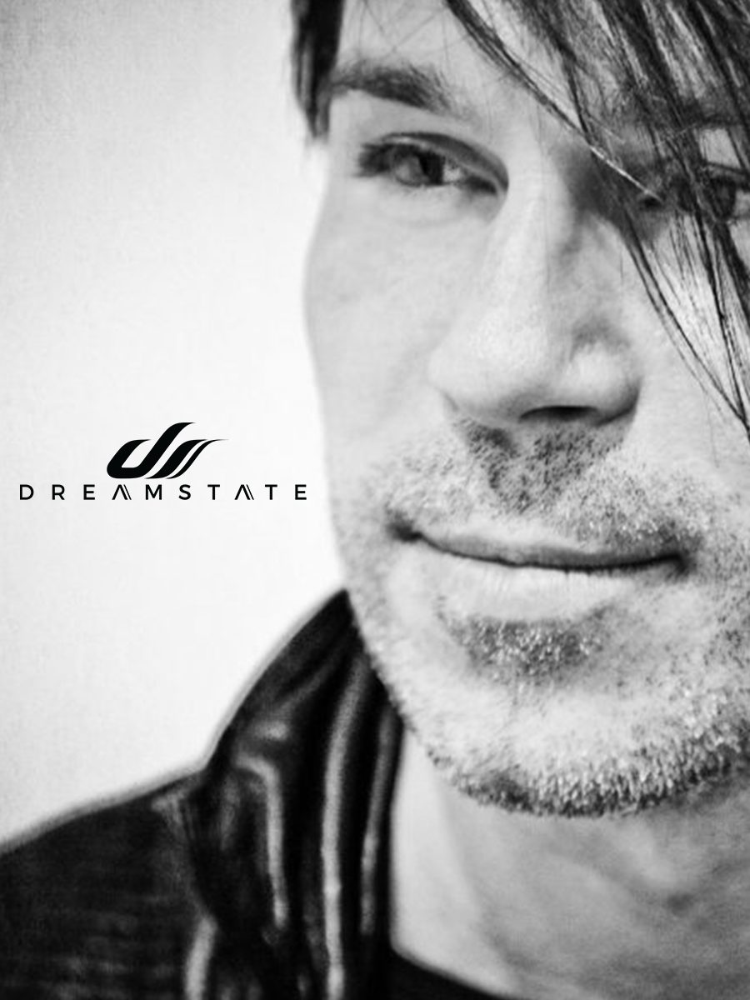

BT Brings the Past, Present and Future of Trance to Dreamstate SoCal 2018


If you were to talk about the past, present, and future of the trance genre, you could conveniently point to American veteran BT, aka Brian Transeau, to conveniently represent all three of them. He’s an electronic music legend who’s held a special mystique since emerging as a key player all the way back during the mid-‘90s, a rare case of an early sonic innovator who’s never lost his enthusiasm and has been able to keep his finger on the pulse from the beginning up until today.
Where to start with the BT legacy? To begin with, he’s been responsible for an incredible 20+ artist albums throughout his career, stretching from 1999’s seminal Movement in Still Life, through to the simmering ambiance of last year’s – _. Not to mention everything in-between, including for example, 2013’s explosive A Song Across the Wires that saw him collaborating with the next generation of trance producers.
Best of all, BT has a ton of enthusiasm for where trance is at in 2018; on top of a ton of enthusiasm for his upcoming set at Dreamstate SoCal. We grabbed him for a quick chat.
What has been the biggest highlight of your year so far?
Absolutely by far writing on and working on my new album. It’s the best album I’ve ever made. I could not be more excited to finish it. Building a new studio was such a long process but the payoff has been pure inspiration. I’ve never had a room where I can access all the equipment I’ve studied, loved, modified, repaired and worked with my whole life. It’s complete insanity and the proof is this next album.
Name your favorite track from 2018?
My track with Matt Fax, “The Noetic.”
Which undercard trance artist do you think people should be watching out for?
I love Spencer Brown. He’s on the deeper kind of prog-side, but wow, his stuff is fantastic.
Everyone has a DJ set that changed their life at one point in time. Tell us about the one set you’ve witnessed that had the biggest impact on you as a person/for your career?
Sasha at Babealicious in about 1995. One of the most amazing nights I’ve ever seen—people actually crying on the dancefloor. Oh, and it was in a barn in rural England. It was the first time I heard my music on a massive sound system, as well.
What boxes do you personally need to tick off in order to have a successful DJ set/live performance?
1. The crowd has to love it and go nuts start to finish
2. They gotta sing back the big songs to me
3. My mixes, edits, live effects and performance are flawless. It’s a high bar.
Tell us one thing that most people might not know about you yet?
I’ve loved the MMA since it’s inception.
What do you think is your strongest skill/ability as an artist? Why do you feel it sets you apart from everyone else?
It’s a weird question to answer, honestly, but I’ll take a crack at it. I think what sets me apart is I can play a 2–3 hour set of only my own music from the last 20 years and you’ll know every single song.
When was the last time you were at a party for fun and not work? How important is it to you to make these type of moments happen, and how often are you able to enjoy a night out on the other side of the decks?
A couple weeks ago, my wife and I put on a couple of hats, said hello to no one and danced all night in Amsterdam at the Anjunadeep party. It was fantastic. This happens once every couple years.
What excites you most about the trance scene at the moment?
That trance is acknowledged as one of the preeminent voices in electronic music.
Are there any aspects of the trance community that you might consider to be doing more harm than good?
Not that I can think of. For a while, there was a tremendous focus on new talent (which is great and lots of amazing new talent to celebrate, for sure). It defocused to an extent how trance got here. There is a small group of us responsible for this music and culture and I love seeing my close friends and peers acknowledged and celebrated. I think that makes our community very healthy. I’d say that’s a problem that has been repaired over that last several years from the EDM craze when people were signing 14-year-olds and completely defocused on the vibrancy and legacy of our rich culture.
How would you describe a Dreamstate event to someone who has never been before?
One of the best events dance music has to offer. A full audio, visual experience you’ll remember the rest of your life. Put it this way: I don’t know anyone that’s only been to one.
What would you say to anyone planning to catch your set at the festival in a few weeks?
It’ll be a night to remember. I’ve got some super special stuff planed for you guys. Grateful to participate and get ready for a fantastic night.
BT is playing at Dreamstate SoCal 2018, which takes place Thanksgiving weekend—Friday, November 23, and Saturday, November 24—at NOS Events Center in San Bernardino, CA. Tickets are on sale now. For more information, visit the official website.
Follow BT on Facebook | Twitter | SoundCloud
Follow Dreamstate on Facebook | Twitter | Instagram